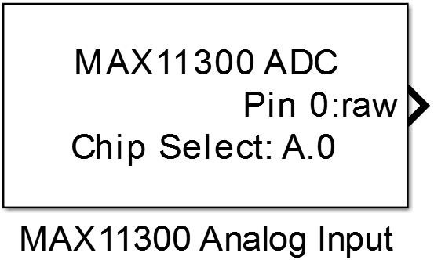
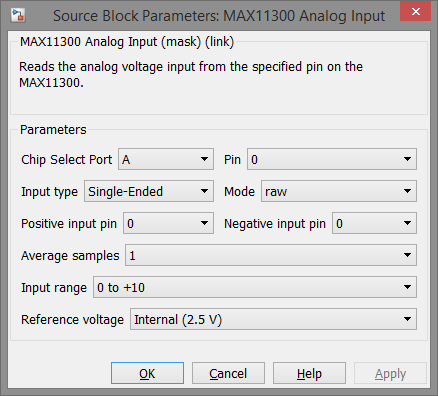

10.7.4. MAX11300 Analog Input
Reads the analog voltage input at the specified pin of the MAX11300.
10.7.4.1. Library
/SPI
10.7.4.2. Description
{kind=link}
This block configures the selected pin of the MAX11300 to act as an analog input. Input can be either single ended or differential. If differential input is configured a second pin must be used to act as the negative input. These negative input can be shared by other differential channels. To reduce noise it is possible to average up to 128 samples inside the MAX11300 before a new value is read at the output register. The reference voltage can be chosen per pin to be internal 2.5V or external.
10.7.4.3. Data Type Support
The block’s output either int16 or single value depending on the Mode parameter.
10.7.4.4. Parameters and Dialog Box
Chip Select Port and Pin
Configuration of the MCU Pin the device’s chip select input is connected to.
Note
The chip select pin must be the same as in the corresponding MAX11300 Config block
Input type
Selects the input mode to single-ended or differential input.
Mode
Selects the output data type to raw (int16 -2048…2047) or relative (0…1)
Positive input pin
Specifies the pin of the MAX11300 for analog input (single ended) or positive voltage input (differential).
Negative input pin
Specifies the pin of the MAX11300 for the negative differential input.
Average samples
Number of samples to be averaged before new value is available.
Input range
Specifies the input range of the configured pin to
- 0V to 10V
- -5V to 5V
- -10V to 0V
Note
To measure negative input voltages the supply voltage of the MAX11300 must be -12V Vss and +12Vdd.
Reference voltage
Select the ADC reference voltage for the specified pin